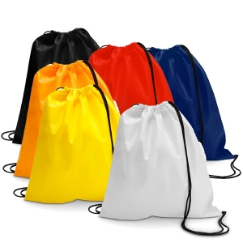
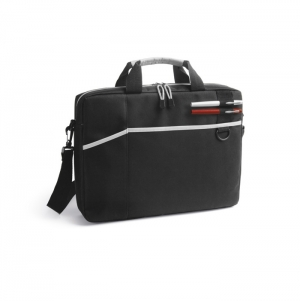

Tipos e variantes
Sacos de duas alças
Observe fundo, abertura e união das alças ao corpo; compare o interior com o conteúdo habitual.
Aspetos que distinguem as opções: Alças, profundidade, costuras e eventual fecho.
Contexto possível: Eventos, compras e transporte conforme a carga documentada.
Sacos de cordões e a tiracolo
Fecho por cordões e alça de ombro são soluções distintas; avalie acesso e transporte com o conteúdo real.
Aspetos que distinguem as opções: Abertura, ajuste e pontos de união.
Contexto possível: Atividades pontuais e acesso rápido.
Mochilas
Compare organização interior e ajuste em vez de escolher apenas pela dimensão exterior.
Aspetos que distinguem as opções: Compartimentos, acolchoamento, alças e fechos.
Contexto possível: Deslocações diárias e transporte de equipamento.
Sacos dobráveis
A forma de dobrar e guardar condiciona o espaço ocupado entre utilizações. Uma bolsa integrada, um fecho ou uma tira de retenção oferecem formas diferentes de arrumação.
Aspetos que distinguem as opções: Sequência de dobra, volume guardado e facilidade de voltar a abrir.
Contexto possível: Compras e transporte ocasional.
Sacos térmicos e bolsas de refeição
Distinga o espaço para recipientes do revestimento interior e de eventuais elementos de frio. Uma aparência almofadada ou metalizada não demonstra desempenho térmico nem adequação a contacto direto com alimentos.
Aspetos que distinguem as opções: Medidas úteis, abertura, limpeza do interior e condições de utilização indicadas.
Contexto possível: Transporte de refeições segundo as instruções dos recipientes e da bolsa.
Sacos de desporto e bolsas para computador
Uma abertura ampla facilita retirar peças volumosas; uma bolsa de equipamento privilegia encaixe e acesso aos compartimentos. Verifique se separar calçado, roupa ou acessórios exige divisórias próprias.
Aspetos que distinguem as opções: Dimensões internas, fechos, alça e distribuição do conteúdo.
Contexto possível: Treino, deslocações diárias e transporte de equipamento.
Malas e acessórios de viagem
Uma mala com rodas, uma bolsa de higiene e um identificador de bagagem têm funções distintas. Organize o percurso de uso: transportar, abrir, encontrar e voltar a guardar.
Aspetos que distinguem as opções: Pegas, rodas se existirem, divisórias, fecho e medidas relevantes para o percurso.
Contexto possível: Viagens e estadias; requisitos de transporte devem ser confirmados para a viagem concreta.

Usos e contextos
- Para entregar documentos ou artigos, teste o encaixe do conteúdo previsto.
- Para equipamento, compare as medidas internas úteis e a proteção documentada, não apenas a diagonal nominal.
O que comparar
- Teste abertura e conforto das alças com o conteúdo esperado.
- Observe uniões das alças, fundo, remates, forro e fechos.
- Peça documentação ou ensaio se carga ou proteção contra água forem decisivas.
- Capacidade nominal e encaixe útil respondem a perguntas diferentes: use as dimensões do conteúdo e simule a abertura com os compartimentos ocupados.
- Coloque o saco na posição habitual de uso e retire um objeto do fundo. Este ensaio simples revela acessos incómodos que uma fotografia não mostra.
Materiais e componentes
São possibilidades a identificar no artigo escolhido. Confirme a composição de cada parte; os materiais de uma variante não descrevem toda a família.
Corpo e painéis
algodão · poliéster · tecidos e não tecidos
Confirmar fibra, construção, gramagem quando indicada e revestimento de cada painel.
Fechos, fivelas e acessórios
plásticos
Identificar peças e forma de substituição; testar funcionamento.
Argolas e ferragens
metais
Observar acabamento e fixação; não deduzir resistência da aparência.
Zonas de personalização
- Painel frontal ou traseiro: Medir zona sem costuras e acesso ao verso; bolsos e forros podem dificultar a aplicação.
- Bolso exterior: Confirmar área e fixação sem afetar o fecho.

Técnicas e condições
Possibilidades gerais para comparar. A aplicação depende do artigo, da superfície, do desenho e das condições do processo; não está confirmada para um artigo específico.
Serigrafia
Confirmar superfície, acabamento, acesso e separação de camadas.
Bordado
Avaliar agulha, estabilização e acesso; a referência de bordado identifica a influência do tecido e da densidade de pontos. ↗
Transfers
Verificar revestimentos, sensibilidade ao calor e área plana para a modalidade escolhida.
Limitações e cuidados
- Gramagem, volume e densidade do fio não equivalem a carga máxima.
- Um bolso para equipamento não demonstra proteção contra quedas nem impermeabilidade.
- Uma passagem ou cabo USB não prova que exista bateria incluída.
- A referência de cuidados desaconselha lavagem à máquina para as mochilas abrangidas pelo seu guia; não é uma regra para todos os sacos. Consulte os cuidados do artigo escolhido. ↗
- Confirme limpeza do forro, fechos e personalização e a forma de secar antes de guardar.
Antes de decidir
- O que vai ser transportado e com que medidas?
- As alças e fechos funcionam com esse conteúdo?
- Que carga e proteção estão documentadas?
- O painel está acessível?
Perguntas frequentes
Um saco mais pesado suporta mais carga?
Não necessariamente. Avalie construção, uniões e componentes; peça dados de carga quando necessários.
O tamanho exterior garante que o portátil cabe?
Não. Confirme medidas úteis do compartimento e teste o equipamento ou as suas dimensões.
Um saco revestido é impermeável?
Não conclua impermeabilidade do artigo completo pelo revestimento; costuras e fechos também precisam de documentação.
Fontes e âmbito
As referências sustentam os factos identificados no texto. Os tipos, contextos e critérios de escolha são orientação editorial; as instruções de um fabricante aplicam-se ao seu próprio âmbito.
-
Bordado — suporte e estabilização
Documentação técnica de referência · Consulta:Influência do suporte, estabilizador, agulha e densidade de pontos.
-
Cuidados de mochilas — âmbito específico
Documentação técnica de referência · Consulta:Limpeza das mochilas abrangidas pelo guia; não estender a todos os sacos.